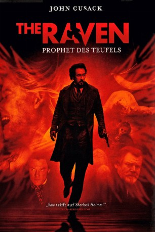
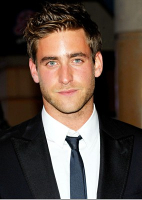
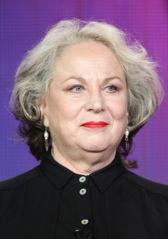
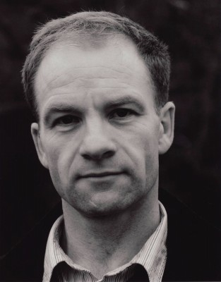
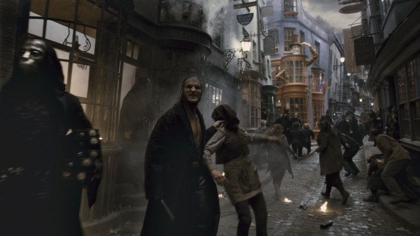
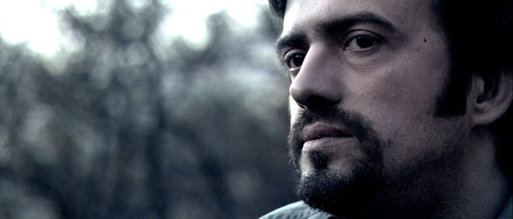
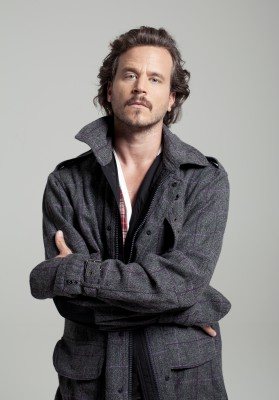
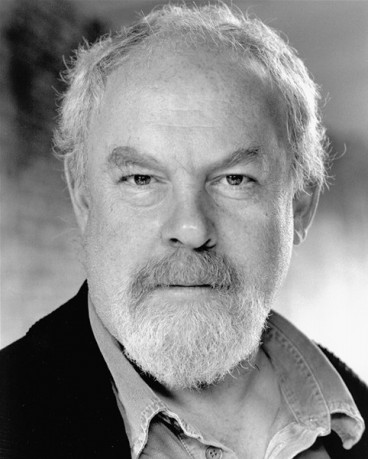
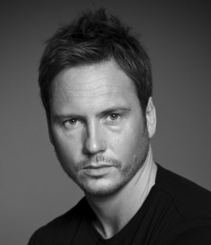

#5118 The Raven - Prophet des Teufels
Alternativ: The Raven
 
 IMDB-Wertung: 6.4 / 10
IMDB-Wertung: 6.4 / 10  Metascore: 0
Metascore: 0 
Sein Gedicht The Raven machte ihn berühmt, doch von seinem Ruhm allein kann der Schriftsteller Edgar Allan Poe nicht leben. Einst gefeiert, dann von der Öffentlichkeit geschmäht, muss er sich seinen Lebensunterhalt als Kritiker verdienen. Doch seine Vergangenheit scheint ihn einzuholen, als Detective Emmett Field ihn darauf hinweist, dass die geheimnisvolle Mordserie, die Baltimore im Jahr 1849 heimsucht, erstaunliche Parallelen zu seinem Romanen aufweist. Offensichtlich nutzt ein Serienmörder Poes alte Geschichten als Vorbild für sein Treiben. Um weitere Morde zu verhindern, begeben sich Poe und Detective Field gemeinsam auf die Suche und versuchen dem Mörder beim nächsten Mal einen Schritt voraus zu sein ...
Jahr: 2012
Dauer: 111 Minuten
FSK: 16
Land: USA Studio: Rogue PicturesTonspuren: DTS - ,
Untertitel: Deutsch,
Auflösung: 1080p (1920x800) Größe: 10444 MB
Genre: Thriller, Krimi, Mystery
Regisseur: James McTeigue
Drehbuch: Marnie Blok
Soundtrack:
Darsteller:
 John Cusack als Edgar Allan Poe
John Cusack als Edgar Allan Poe Luke Evans als Detective Fields
Luke Evans als Detective Fields Alice Eve als Emily Hamilton
Alice Eve als Emily Hamilton Brendan Gleeson als Capt. Charles Hamilton
Brendan Gleeson als Capt. Charles Hamilton Kevin McNally als Maddux
Kevin McNally als Maddux-  Oliver Jackson-Cohen als John Cantrell
- Sam Hazeldine als Ivan
-  Pam Ferris als Mrs. Bradley
 Brendan Coyle als Reagan
Brendan Coyle als Reagan-  Adrian Rawlins als Doc Clements
- Aidan Feore als Stage Manager
-  Dave Legeno als Percy
- Michael Shannon als Dr. Morgan
- Charity Wakefield als Field's Maid
- Ian Virgo als Fire Marshall
-  Sergej Trifunovic als Salty Sailor
 Mark Phelan als Barfly 1
Mark Phelan als Barfly 1-  Máté Haumann als Uniformed Guard
-  Jimmy Yuill als Captain Eldridge
- Michael Cronin als Old Gentleman
- Michael Poole als Professor
- John Warnaby als Griswold
- Matt Slack als Sailor
- Michael J. Fourticq als Bookseller
- Jasmina Ilic als Older Tenement Woman, Dead
- Teodora Uveric als Young Tenement Woman, Dead
- Kristof Farkas als Wretching Student
- Luka Mijatovic als Small Boy
- József Tálos als Sherry Merchant
-  Matt Devere als Hamilton's Security Guard
- Milos Djuricic als Porter - Paris
- Mike Kelly als Party Reveler
- Bojan Peric als Officer at Precinct
- Ana Sofrenovic als Lady Macbeth
- Steve Agnew als Doctor in 'Macbeth'
- Malina Nikolic als Gentlewoman in 'Macbeth'
- Miklós Kapácsy als Headline Man 1
- Andrew Hefler als Headline Man 2
- Pierre Boris Jaurdin als French Officer
- Tamara Krcunovic als Doc Clements' Maid
- Jason Ryan als Crew Member
- Antal Publik als Cardinal
- László Konter als Breathless Tenement Man
- Krisztián Peer als Barfly 2
- Annamaria Ordog als Actress
- Ádám Földi als Church Secretary
- Dejan Cubrilov als Maurice Robichaux
- Péter Fancsikai als Young Man Skeleton
Datei: X:\2012(N-Z)\Raven - Prophet des Teufels, The (2012, FSK16, 1920x800).mkv seit 23.12.2016
Festplatte: HD 2012(N-Z)-2013(A-H)
 Es gibt insgesamt 138 Filme in der Gruppe '2012(N-Z)'
Es gibt insgesamt 138 Filme in der Gruppe '2012(N-Z)'